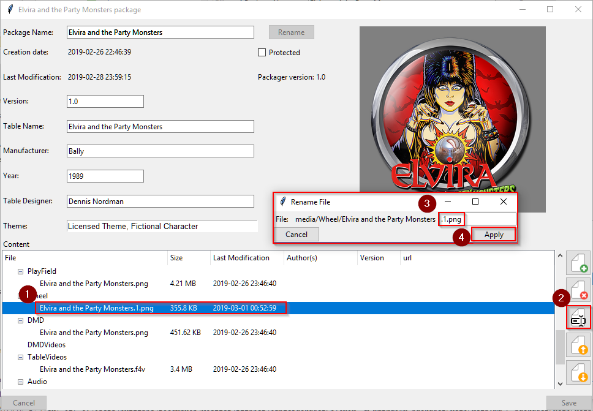
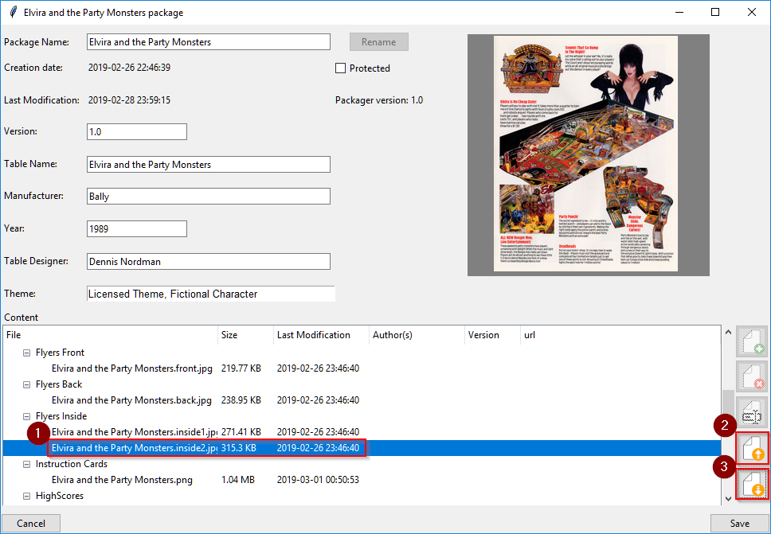
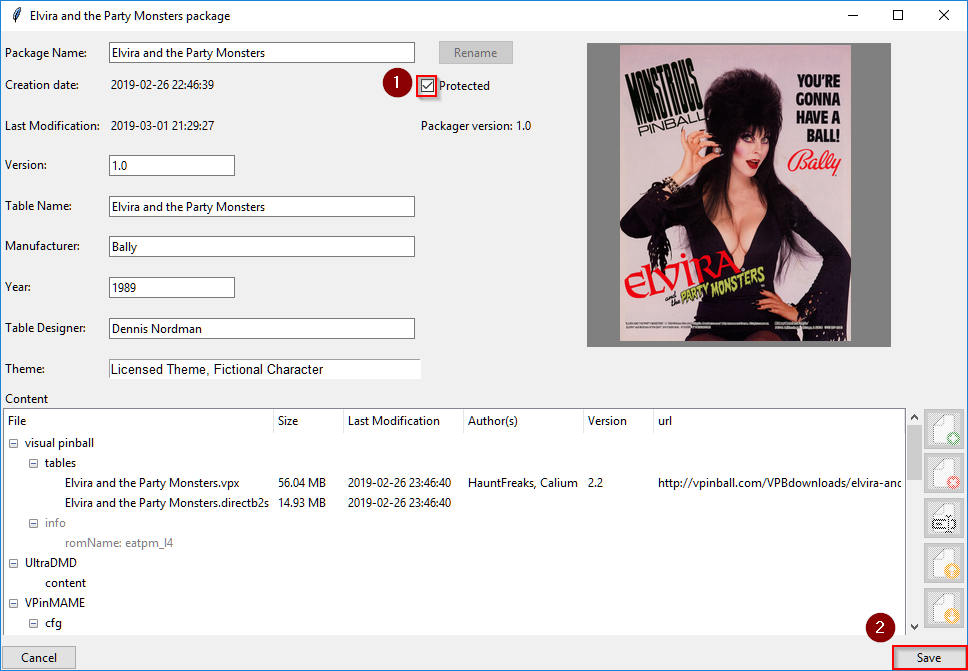
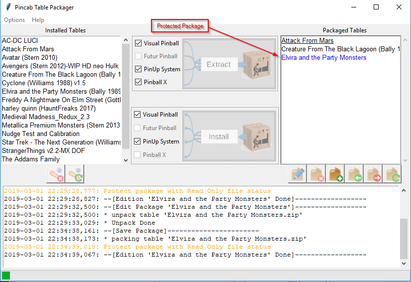
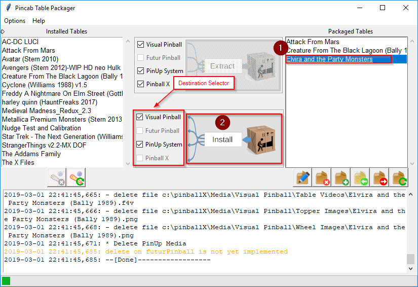
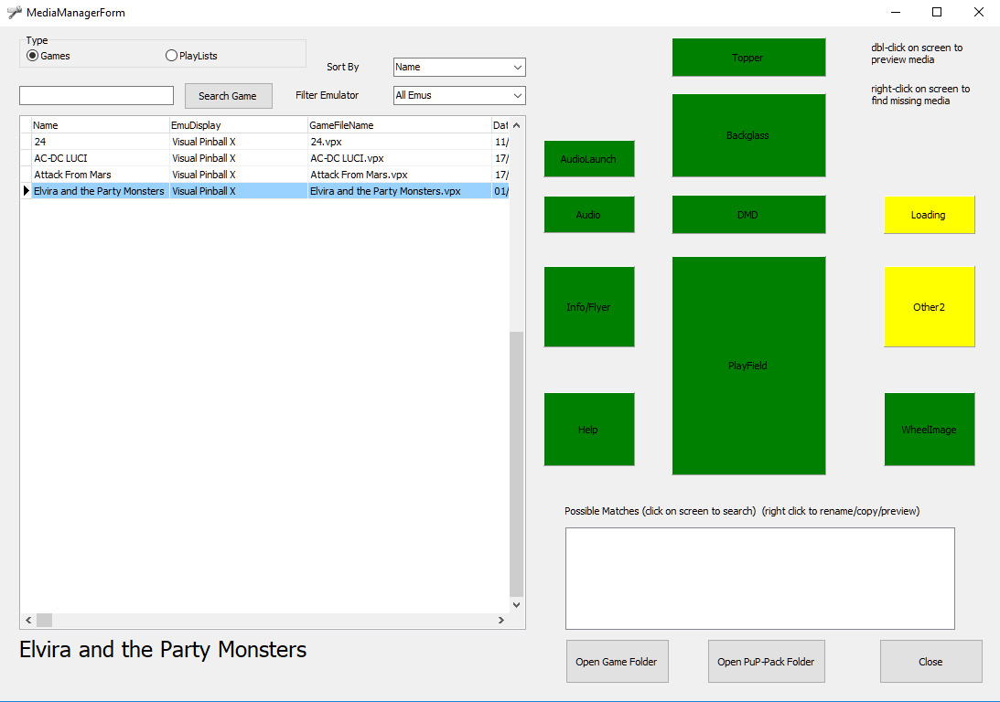
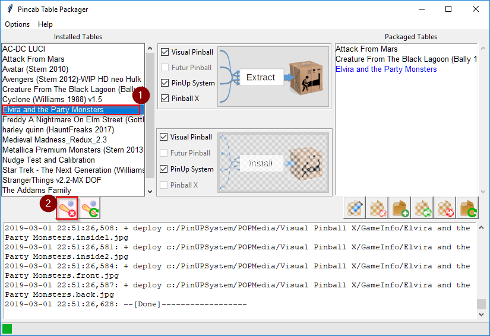

The aims of Table Packager is to gather all the files of a pinball table (table, rom, media, etc.) in a single compressed file, a compressed package. You can edit it, add file or info and then deploy it on you pincab or distribute it on the web.
For the moment, you can extract table and media files from Pinball X, PinUp System and Visual Pinball X.
A package can be installed on Pin Up System and Visual Pinball (Pinballx is not available on installation
because I don't know how Pinball X links media files with it's internal data)

Table Packager is compatible on Windows 7 and more (32 or 64 bits).
On Windows 7, you must download Visual C++ Redistributable from
https://www.microsoft.com/en-in/download/details.aspx?id=48145,
install it and Reboot the system.
To install Table Packager, double click on
tablePackager-x.y-win32.msi
When the following window open, click "Next"

Then, accept the request for elevation of windows and wait during installation

At the end of installation, you should see something like this:

And this icon on your desktop:

To launch Table Packager, just double click on the icon:
Then, you should see an window like this:

This window is mainly divided into two lists:
the list of "Installed Tables" that contains all the tables found by Table Packager
the list of "Packaged Tables" which contains all the packaged tables (empty)
The "Installed Tables" (in red) list contains all table used by Visual Pinball
To transform a table and all associated files (sound, rom, flyers, etc.), simply:
Select the table to extract from the list "tables installed"
Click the "Extract" button.
Then, Table Packager searches for all the files linked to this table (you can then see it in the Actions view) and create a file "table package" (Elvira ad the Party Monsters (Bally 1989).zip) containing all the files and metadata.

You can now edit this package to rename it, add information files or multimedia:
Select it and
Click on edition button

Table Package unpack package in a tmp directory and then open an edition windows:

You can add information on the flipper, rename the package, add a file, etc.

To rename a package:
modify the package name field
Click on rename button
All files are renamed
Click on Save button to save the result or click on cancel otherwise

You can add information about each file in a package. For that:
Select the file on the treeview and double click on it
An meta information window appears, add info and save it

To add a file:
Select the file category (Instruction Cards on our example)
Click on the 'Add button',
Then choose your file with the Select File popup
Click on 'Open'
If the name of the file to be added is not exactly the same as the name of the package, a popup proposes to rename the file.

To delete a file:
Select the file to delete
Click on the 'Del button'
Except for the rom files, the files must have the same name as the table. However, it is possible to have to differentiate the files by renaming the extensions. So you can make two files live together "Elvira and the Party Monsters.png" in the same section by renaming them for example by:
Elvira and the Party Monsters.1.png
Elvira and the Party Monsters.2.png

To rename a file:
Select the file,
Click on rename button,
Change extension name
Then click on Apply button

You can move a file between sections. For example, to move the file Elivia and the Party Monsters.inside2.jpg to Flyers Back section:
Select it
Click on the "up file" button
To move the same file to Instruction Cards section, click on the "down file" button
All changes made in edition will only be applied after the save (button Save).
To avoid overwriting a package by mistake, you can protect it by enabling the "Protected" checkbox, and save the package.

A protected package is marked by a blue color in Package Table List.

You can remove the protection by edit the package and unselect "Protected".

Your Elvira Package is ready, it's time to install it on your pincab:
Select the package
Click on Install button
All package files are copied to the different Visual Pinball and PinUp System directories.
You must then import this new pinball into the PinUp System list (run pinUpMenuSetup.exe). You can see that all the media are "green" and ready to work in the "MediaManagerForm" window.

Many files accumulate in Visual Pinball, VPInMAme, PinUp System, and so on.
You can clean the files of a table by selecting it from the list of tables, then click on the delete button.
TablePackager will browse the files installed for the deletes. It also works with an installed package.
